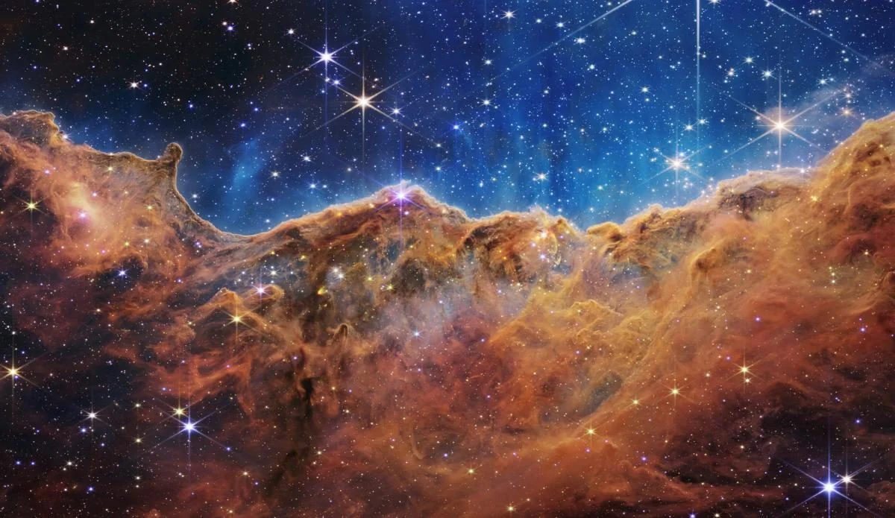
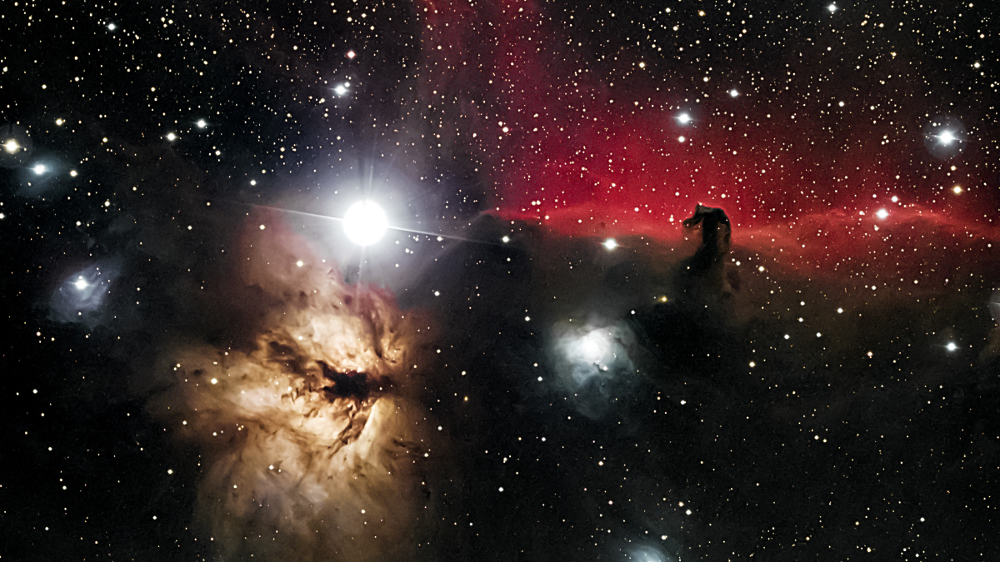
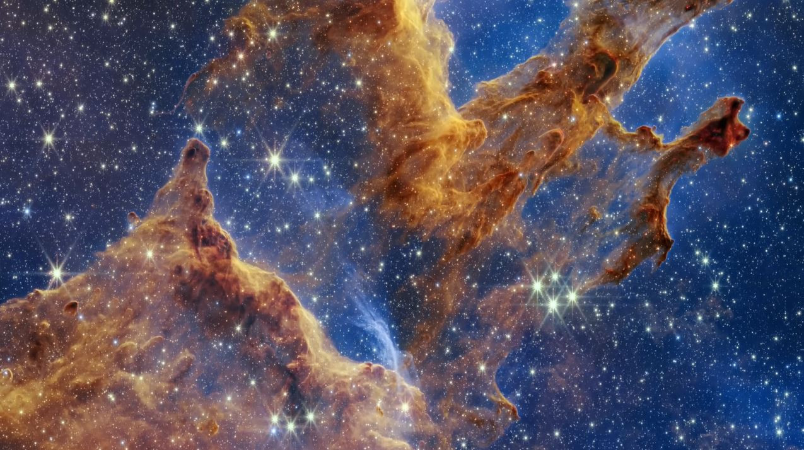
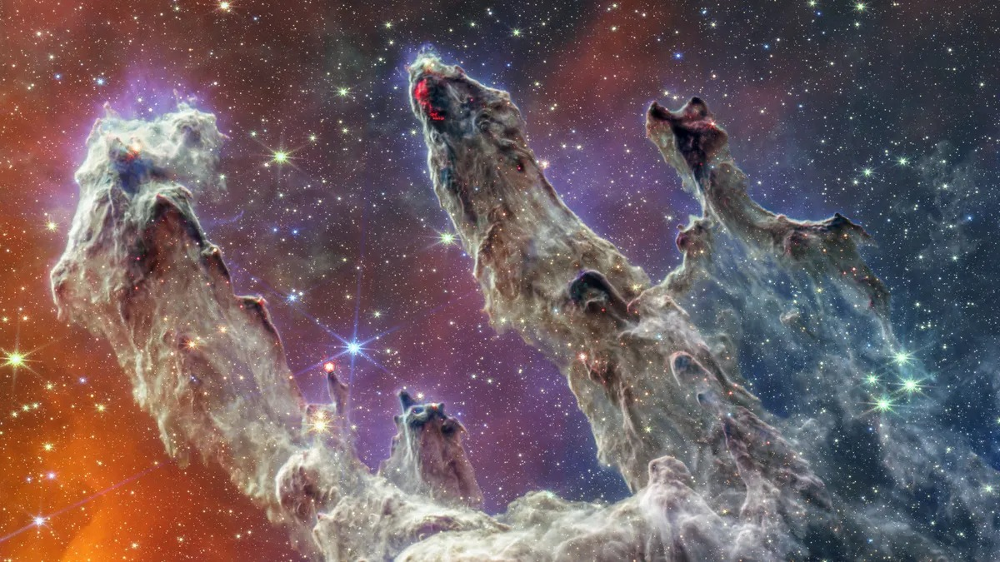
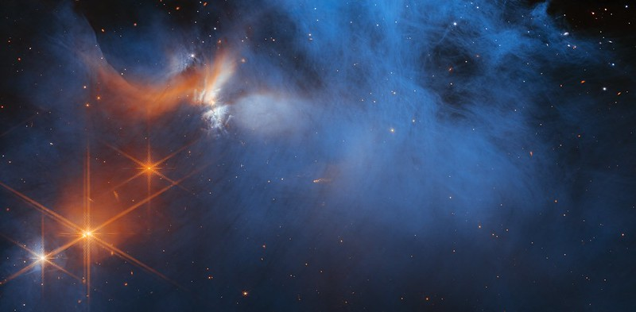
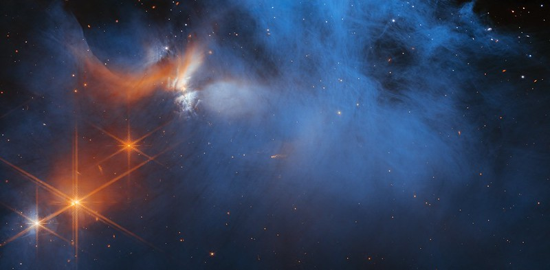

About James Webb
On the right is the American orbital infrared space telescope (James Webb Space Telescope, JWST). It is intended for a wide range of observations in astronomy and cosmology, in particular, the observation of the most distant objects and events in the universe, such as the formation of the first galaxies.
The development and management of the telescope is carried out through the international cooperation of 17 countries, led by NASA, with significant input from the European and Canadian space agencies. This telescope is the successor to Hubble as NASA's flagship astrophysics mission. At launch the webb telescope was the largest, most expensive and most sensitive optical and infrared space telescope in human history.
Click on the video to stop or start playback
Let's get started
In September 1989, the Space Telescope Science Institute (STScI) and NASA co-hosted the Next Generation Space Telescope Workshop at STScI, bringing together more than 130 astronomers and engineers. The group proposed that NASA investigate the feasibility of a 10-meter, passively cooled, near-infrared telescope in a high-Earth orbit or a 16-meter telescope based on the Moon to study galaxies at high redshift.
In 1996, an 18-member committee led by astronomer Alan Dressler formally recommended that NASA develop a space telescope that would view the heavens in infrared light—the wavelength band that enables astronomers to see through dust and gas clouds and extends humanity’s vision farther out into space and back in time. It would have a mirror with a diameter of more than four meters, and operate in an orbit well beyond Earth’s moon.
Three teams made up of scientists and engineers from the private and public sectors met to determine whether NASA could realize the committee’s vision. All three came to the conclusion that the proposed telescope would work. NASA agreed in 1997 to fund additional studies to refine the technical and financial requirements for building the telescope. By 2002, the agency had selected the teams to build the instruments and the group of astronomers who would provide construction guidance. Also in 2002, the telescope was formally named the James Webb Space Telescope, after the NASA administrator who led the development of the Apollo program.
Gallery
    
